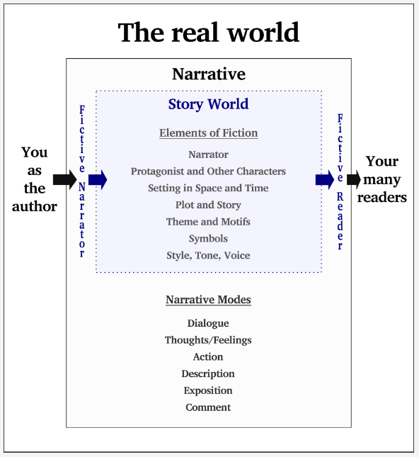
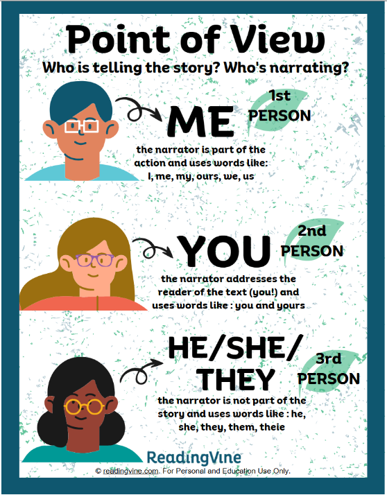
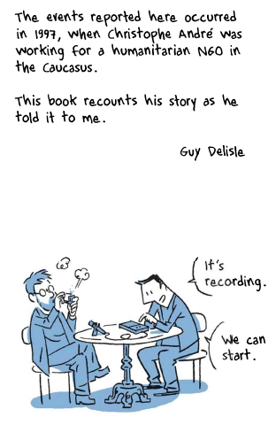
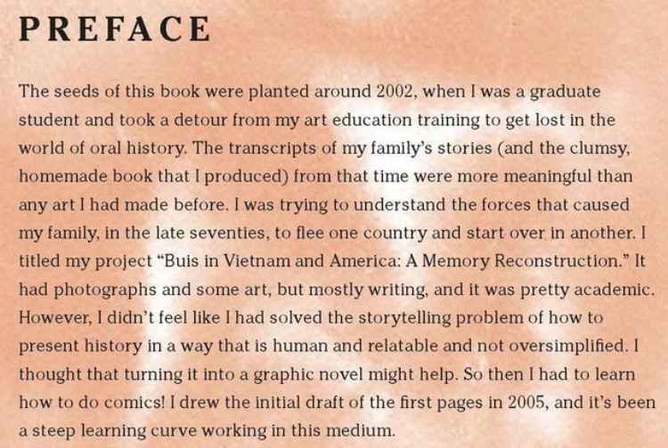

WEEK 1: THE GRAPHIC MEMOIR GENRE

Estimated Completion Time: 90 minutes
Semester-at-a-Glance:
| Module | Week | Date | Topics | Reading | Assignments & Assessments | Assignment Due Dates |
| Module 1 |
Week 1 | January 6-12 | Graphic memoirs as a genre | --- | --- | --- |
| Week 2 |
January 13-19 |
Darrin Bell's The Talk (2023) | Chs. 1-5 (pp. 1-114 -- use the Adobe PDF page numbers) | --- | --- | |
| Week 3 | January 20-26 | Darrin Bell's The Talk (2023) | Chs. 6-11 (pp. 115-213) -- use the Adobe PDF page numbers) | --- | --- | |
| Module 2 |
Week 4 | January 27 - February 2 | Thi Bui's The Best We Could Do (2017) | Chs. 1-3 (pp. 1-90) | Personal Reading Response 1 (10%) | February 2 at 11:59 pm (EST) |
| Week 5 | February 3-9 | Thi Bui's The Best We Could Do (2017) | Chs. 4-6 (pp. 91-210) | --- | --- | |
| Module 3 |
Week 6 | February 10-16 | Mine Okubo's Citizen 13660 (2014) | Pages 3-99 | Quiz 1 (10%) | February 16 at 11:59 pm (EST) |
| Week 7 | February 17-23 | Mine Okubo's Citizen 13660 (2014) | Pages 100-209 | --- | --- | |
READING WEEK |
February 24 - March 2 | |||||
| Module 4 | Week 8 | March 3-9 | George Takei's They Called Us Enemy (2019) | Pages 1-108 | Personal Reading Response 2 (20%) | March 9 at 11:59 pm (EST) |
| Week 9 | March 10-16 | George Takei's They Called Us Enemy (2019) | Pages 109-205 | --- | --- | |
| Module 5 |
Week 10 | March 17-23 |
Guy Delisle's Hostage (2017) |
Pages 1-97 | Group Discussion (20%) | March 23 at 11:59 pm (EST) |
| Week 11 | March 24-30 |
Guy Delisle's Hostage (2017) |
Pages 99-193 | --- | --- | |
| Module 6 |
Week 12 | March 31 - April 6 | Marjane Satrapi's Persepolis (2004) |
Pages 3-71 | Personal Memoir and Analysis (30%)--IF YOU WANT FEEDBACK ON THE PROJECT | April 6 at 11:59 pm (EST) |
| Week 13 | April 7-13 | Marjane Satrapi's Persepolis (2004) |
Pages 72-153 | Personal Memoir and Analysis (30%)--IF YOU WANT JUST THE RUBRIC | April 13 at 11:59 pm (EST) | |
| Week 14 | April 14-20 | Course Administrative Matters | --- | Quiz 2 (10%) |
April 20 at 11:59 pm (EST) Please note that because grades must be submitted, I cannot offer extensions on this quiz. Any that are not completed by the deadline will receive a grade of 0. |
|
Introduction
Welcome to LITT 27733GD: Life Writing! This is a degree-breadth level elective course that does contain texts with mature themes and language. Over the next 14 weeks, we are going to focus on a specific (sub)genre of life writing: graphic memoirs.
 |
Mature Themes, Content, and LanguageWhile I do my best to choose texts that are not too graphic or explicit, if you are not comfortable with the following topics or feel that reading about such experiences will be too much for you, I would recommend switching to a different course:
A more detailed list of trigger warnings can be found beneath each text in the "Course Texts" Content Section. |
Graphic Memoirs? Do you mean, like, "graphic novels"?
Let's start with the obvious question: what is a graphic memoir, exactly? Here's a definition and description provided by the Young Adult Library Services Association:
Definition
Graphic memoirs are comics or sequential art that tell an autobiographical or semi-autobiographical story. Because they are a sub-genre of graphic novels and comics in general they may sometimes be referred to more generally as “nonfiction graphic novels.”
Characteristics
Most graphic memoirs do not cover the same wide scope a print memoir would. Typically what they lack in breath, the make up for in depth. Since graphic memoirs are instead more focused, they often afford the author the opportunity to focus on one particular event, span of years, or relationship with someone or something and their feelings surrounding it. A key advantage of using the comics medium is the ability to show rather than merely tell. Everything from the font used for a particular character’s speech, to the size and position of each panel helps to tell the story. In memoir, this can help the author to communicate a feeling or situation from their past more immediately and, and perhaps more effectively, than if they were relying on text alone.
By looking at graphic memoirs, we're merging two styles of narrative: the autobiography/memoir and the graphic novel. As such, much of the language that we use to discuss graphic memoirs is borrowed from the comic/graphic novel genre. Check out the video below (00:16:21) for a great high-level overview of these concepts:
Since the memoir is a narrative about the self, the "speaker" in the story is the same as the author. However, this is not always the case in literature, and people often mistake the narrator in novels/poetry for the author. It's useful, then, to define these terms so that we all use them consistently:
Narrator: a character or "voice" that is developed to help in the delivery of plot and/or information in a text.
Author: the person who actually writes the story. The narrator voice in the text may or may not represent the author's voice/opinions/thoughts.
In the memoir genre, this relationship between narrator and author is most often straight-forward: they are the same person (the person writing the story is the "I" or the subject of the memoir). Below is a visual representation of how the author and/or narrator interact with the reader/audience:

Two boxes are on a page. The inner most box is labelled "Story World," and contains the elements of fiction: narrator, characters, setting, plot, story, theme, symbols, style, tone, voice, etc. The second, outer box is labelled "Narrative" and lists different narrative modes: dialogue, thoughts, feelings, action, description, exposition, and comments. Authors and readers are positioned opposite of each other outside the second box ("You as the Author" on the left and "Your Many Readers" on the right). Between the author and the first box is a space that accounts for a fictive narrator (the narrator that we create in the text). Between the first box and the reader is a space for the fictive reader, or the reader that the author imagines when they write. The author and the reader exist in the real world space outside of the narrative. Image Source
In the diagram above, you can see how the author and the reader connect with the reader/audience through the mediated world of the narrative: the author uses elements of fiction and narrative modes to tell their story. Confused? Don't worry! Check out my mini-lesson below (00:04:39) on how to interpret this diagram:
To expand upon this point, the following video clip (00:01:41) shows Morgan Freeman narrating strangers on the street (note that he is not the author or videographer of the text, nor is he any of the main characters). In this case, the narrative voice is separate from the author and main characters ("Perfect Selfie Paul" or "Selfie Stick Sam"):
Now, if Morgan Freeman wrote a memoir about his life, his would be the narrative voice in the text. However, if Morgan Freeman wrote a book about a young woman living in New York city, the narrator (the young woman) would not be the same as the author (Morgan Freeman).
But be careful! Even if a narrator is writing in the first person (using I, me, or we), that does not necessarily mean that the author is the narrator. Some authors do this as a literary device to give the impression that the reader is "inside" the character's head.
In short, we cannot assume that the narrative voice in the text is the author, unless that is made clear to us through the introduction or the genre. In our case, the author is almost always the narrator, but not always! In order to get a better grasp on the role of the narrator in memoirs, it is important to understand narrative point of view and perspective.
Understanding Narrative Point-of-View (POV) and Perspective
All English texts/stories will be written in one of three "voices" or "points of view":
- 1st person (I, me, we, they/them*): eg. When we got to the store, I realized that I had forgotten my wallet.
- 2nd person (you): eg. When you got to the store, you realized that you had forgotten your wallet.
- 3rd person (he, she, they): eg. When they got to the store, he realized that he had forgotten his wallet.
*To be inclusive, they/them is now considered an acceptable first-person pronoun according to the APA and MLA.

The three points of view are illustrated with their associated pronouns. Image Source
As you can see, different points of view will give us a different tone and information about events.
Third person narrators can be omniscient, objective or limited. This is what we call narrative perspective.
- Omniscient Narrator: the narrator is all-knowing. Narrator tells thoughts, feelings, dialogues and actions of more than one character.
- Objective Narrator: the narrator does not reveal any character's thoughts or feelings. Only character's dialogue and actions are narrated.
- Limited Narrator: the narrator knows only about other characters and events that he or she has encountered. Can only tell the thoughts/feelings of one character.

The three types of narrative perspective are summarized in a table. Image Source
Think you've got narrative point of view and perspective down? Try this quick quiz to make sure!
Narrative POV and perspective are important elements of literary studies in general and in memoirs in particular. The style and tone that the author chooses for a narrator are key components in setting up how the reader will relate to the text and the story that you tell. First person tends to provide a sense of closeness and intimacy, while Third person puts distance between the reader and the characters. Second person (by far the most uncommon POV in literature) often creates an unsettling relationship between the narrator and reader since it imposes perspectives and ideas upon the reader that they may otherwise not adopt or understand.
The Graphic Memoir: Author, Narrator, and... Illustrator?
Generally speaking, memoirs/autobiographies are fairly clear cut in terms of the relationship between the narrator and the author. However, with graphic memoirs, this distinction can get messy because the illustrator/illustrations add a layer of complexity. Oftentimes (though not always), the author may not be the same person doing the illustrations. This means that the visual part of the narrative may be interpreted and represented by someone who did not live the experience (the illustrator/artist). In other words, the author is being represented through a second perspective.
But what does it matter? The story is the story, right? Except that the notion of "truth" in memoir is incredibly important because it lends validity and credibility to the author/narrator's lived experience. Or, to borrow an North American idiom: in life writing, "the devil is in the details."
Consider the first page of narrative content in Hostage (2017), which we will cover in an upcoming module:

There is a caption at the top that reads: "the events reported here occurred in 1997, when Christophe André was working for a humanitarian NGO in the Caucasus. This book recounts his story as he told it to me. Guy Delisle." Below is an illustration of two men sitting at a small, round table. The man on the right (Christophe André) drinks coffee, while the man on the left (Guy Delisle) sets up a microphone. Delisle says: "It's recording. We can start."
Now, let's compare that page to the Preface to The Best We Could Do(2017), another text we will look at in this course:

The images reads as follows: "Preface. The seeds of this book were planted around 2002, when I was a graduate student and took a detour from my art education training to get lost in the world of oral history. The transcripts of my family's stories (and the clumsy, homemade book that I produced) from that time were more meaningful than any art I had made before. I was trying to understand the forces that caused my family, in the late seventies, to flee one country and start over in another. I titled my project "Buis in Vietnam and America: A Memory Reconstruction." It had photographs and some art, but mostly writing, and it was pretty academic. However, I didn't feel like I had solved the storytelling problem of how to present history in a way that is human and relatable and not oversimplified. I thought that turning it into a graphic novel might help. So then I had to learn how to do comics! I drew the initial draft of the first pages in 2005, and it's been a steep learning curve working with this medium."
Here, we can see complications of illustrating a narrative: by rendering it in a visual medium/style--by making a memoir a graphic memoir--there is potential for new dimensions of meaning and emotion to be communicated, but the same potential also exists for them to be lost if the narrative must be illustrated by someone other than the author/narrator. However, this is not to say that graphic memoirs with separate illustrators are some how lesser than those where the author/narrator/illustrator are the same person; rather, it just adds another lens through which we must take our understanding of the story into account.
The Role of "Truth" in Memoirs
As you will no doubt appreciate, the role of "truth" in life writing is very complicated. There is a difference between "accuracy," "facts," and "truth." Watch the following short video (00:04:28) and pay attention to the panel members' discussion of truth.
In this video, Aciman discusses "shifting inflections of the truth," and the difference between emotional truth and factual truth. In so doing, he suggests that there can be different variations and understandings of what constitutes telling the truth.
In 2005, comedian and television show host Stephen Colbert coined the word "truthiness." Truthiness is a quality characterizing a "truth" that a person making an argument or assertion claims to know intuitively "from the gut" or because it "feels right" without regard to evidence, logic, intellectual examination, or facts. According to Colbert, he was "thinking of the idea of passion and emotion and certainty over information" when he first used the word truthiness ("Truthiness").
An image that defines Colbert's truthiness as "truth that comes from the gut, not books." Image Source
Okay, so let's take this a step further. In a 2022 interview (00:07:04), Neil deGrasse Tyson discusses the difference between "personal truth" (also called "subjective truth"); what he calls "political truth"; and "objective truth":
So, we can see how the concept of "truth" can become complicated when people are recounting personal stories and experiences: there will always be a subjective element to the narrative. Moreover, as scholar Mary Karr (2015) notes, "the best memoirists stress the subjective nature of reportage. Doubt and wonder come to stand as part of the story" (p. 14). Karr further stresses that:
As we've lost faith in old authorities, our confidence in objective truth has likewise eroded. Science and scripture and church doctrine were once judged unassailable founts of truth [...] Histories and biographies often open with 'positioning essays' explaining the writer's innate prejudices. And while formerly sacred sources of truth like history and statistics have lost ground, the subjective tale has garnered new territory. That's partly why memoir is in its ascendancy - not because it's not corrupt, but because the best ones openly confess the nature of their corruption. (pp. 15-16)
Memoirists must make choices: what should be included in the narrative? What should be left out? Which details can be approximated, and which are essential to get historically accurate? Whose voices should be included? Excluded?
Recall a funny memory from your past and tell the story of it to someone else (or tell it to yourself in the mirror). It would be impossible to recall every single detail, nor would your audience likely want to hear all of those details! History--both collective and individual--must be edited for the sake of converting memory into a comprehensive narrative (especially if the narrative is non-linear).
Below is an excerpt from "In Conversation with JJ Lee: The Art and Business of Memoir Editing" (2024), in which the interviewer and Lee discuss the complexities of editing memoirs:
WCE
Let’s talk a little bit more about that. In my experience as an editor, the problem usually is that the writer wants to say something that people don’t want to read. The writer is saying, “Well, this is my truth. This is how I want to tell it and I don’t really care what the industry wants.” How do you deal with that?
JJ Lee
There are two solutions to that; I feel quite strongly about this.
One is, not all memoirs need to be published. There’s a long history of memoirs that exist outside of publishing, right? And it’s not the same as fan fiction or manuscripts that have been tossed into the bottom of a drawer for a novel. I’m talking about memoirs that are written for families. They’re primary or secondary historical documents, when you really think of it. Memoirs can also go into an archive and provide materials for researchers—there are many unpublished biographies that have helped authors of military history, let’s say, fill in the pieces of the puzzle for a battle. That’s one extremely valuable role that the unpublished memoir can play in our culture and our history. Memoir is a very special genre that has meaning above and beyond publishing. In these cases, I have a duty to help memoirists organize their thoughts, their feelings, so that at least the work is rational. Now, if someone wants to publish, then they do have to acquiesce to the idea of a readership or at least approach a readership. Then, there are known skills that do that.
.png) |
Self-ReflectionImagine an aspect of your life about which you wish to write a memoir (yes, this is something that we will be doing in this course). How would you edit it down to a rational, cohesive story that a stranger can follow? What context would you have to include? What would be the point/message of telling your story? |

This completes the Week 1 Content Module. Thank you for participating!